V primaria
2244 schede in italiano per la V primaria, pronte da stampare e con soluzioni.
2.244 materiali
Tema
Le mille e una notte – Scheda: testo con spazi vuoti, comprensione all'ascolto e crucipuzzle
Lavorazione della ceramica – Scheda: testo con spazi vuoti, comprensione all'ascolto e crucipuzzle
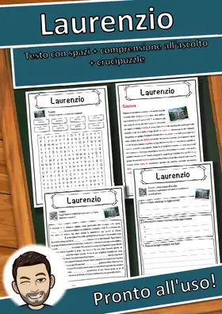
Laurenzio – Scheda: testo con spazi vuoti, comprensione all'ascolto e crucipuzzle
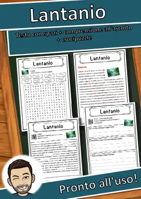
Lantanio – Scheda: testo con spazi vuoti, comprensione all'ascolto e crucipuzzle
Lago salato – Scheda: testo con spazi vuoti, comprensione all'ascolto e crucipuzzle
Lago di Garda – Scheda: testo con spazi vuoti, comprensione all'ascolto e crucipuzzle
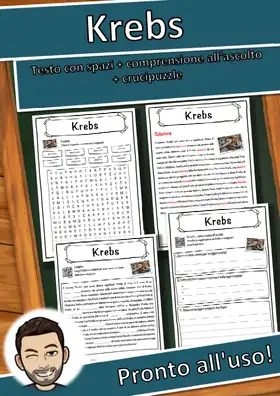
Krebs – Scheda: testo con spazi vuoti, comprensione all'ascolto e crucipuzzle
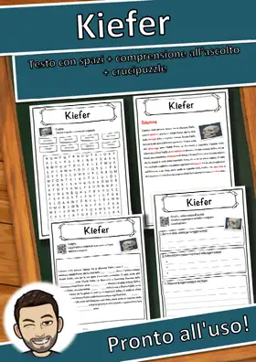
Kiefer – Scheda: testo con spazi vuoti, comprensione all'ascolto e crucipuzzle
Kazakistan – Scheda: testo con spazi vuoti, comprensione all'ascolto e crucipuzzle
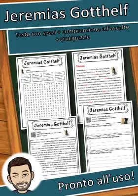
Jeremias Gotthelf – Scheda: testo con spazi vuoti, comprensione all'ascolto e crucipuzzle
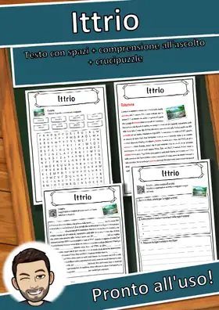
Ittrio – Scheda: testo con spazi vuoti, comprensione all'ascolto e crucipuzzle
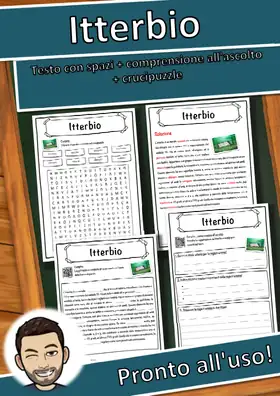
Itterbio – Scheda: testo con spazi vuoti, comprensione all'ascolto e crucipuzzle
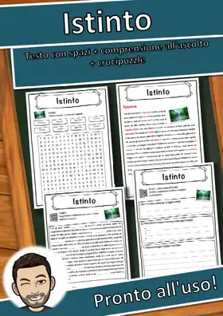
Istinto – Scheda: testo con spazi vuoti, comprensione all'ascolto e crucipuzzle
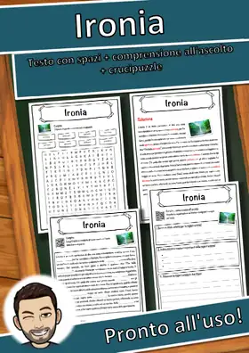
Ironia – Scheda: testo con spazi vuoti, comprensione all'ascolto e crucipuzzle
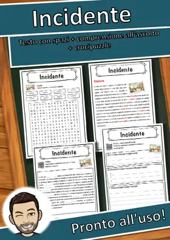
Incidente – Scheda: testo con spazi vuoti, comprensione all'ascolto e crucipuzzle
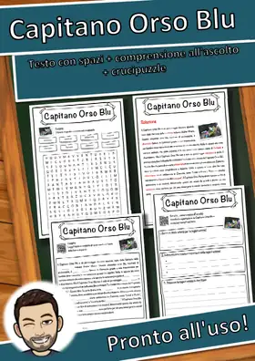
Capitano Orso Blu – Scheda: testo con spazi vuoti, comprensione all'ascolto e crucipuzzle

Cultura – Scheda: testo con spazi vuoti, comprensione all'ascolto e crucipuzzle

Crustacea – Scheda: testo con spazi vuoti, comprensione all'ascolto e crucipuzzle

Crudeltà verso gli animali – Scheda: testo con spazi vuoti, comprensione all'ascolto e crucipuzzle

Cromo – Scheda: testo con spazi vuoti, comprensione all'ascolto e crucipuzzle

Crociera – Scheda: testo con spazi vuoti, comprensione all'ascolto e crucipuzzle

Cracovia – Scheda: testo con spazi vuoti, comprensione all'ascolto e crucipuzzle

Costituzione – Scheda: testo con spazi vuoti, comprensione all'ascolto e crucipuzzle

Cospirazione – Scheda: testo con spazi vuoti, comprensione all'ascolto e crucipuzzle

Copyright – Scheda: testo con spazi vuoti, comprensione all'ascolto e crucipuzzle

Coprifuoco – Scheda: testo con spazi vuoti, comprensione all'ascolto e crucipuzzle

Copernicio – Scheda: testo con spazi vuoti, comprensione all'ascolto e crucipuzzle

Conservatorismo – Scheda: testo con spazi vuoti, comprensione all'ascolto e crucipuzzle

Conoscenza – Scheda: testo con spazi vuoti, comprensione all'ascolto e crucipuzzle

Colorado – Scheda: testo con spazi vuoti, comprensione all'ascolto e crucipuzzle

Cognome – Scheda: testo con spazi vuoti, comprensione all'ascolto e crucipuzzle

Civiltà occidentale – Scheda: testo con spazi vuoti, comprensione all'ascolto e crucipuzzle

Città del Messico – Scheda: testo con spazi vuoti, comprensione all'ascolto e crucipuzzle

Circolo polare – Scheda: testo con spazi vuoti, comprensione all'ascolto e crucipuzzle

Cinema muto – Scheda: testo con spazi vuoti, comprensione all'ascolto e crucipuzzle

Ciarlatano – Scheda: testo con spazi vuoti, comprensione all'ascolto e crucipuzzle

Ciad – Scheda: testo con spazi vuoti, comprensione all'ascolto e crucipuzzle

Cheloniidae – Scheda: testo con spazi vuoti, comprensione all'ascolto e crucipuzzle

Cemento – Scheda: testo con spazi vuoti, comprensione all'ascolto e crucipuzzle

Cecità – Scheda: testo con spazi vuoti, comprensione all'ascolto e crucipuzzle

Cecenia – Scheda: testo con spazi vuoti, comprensione all'ascolto e crucipuzzle

Caviidae – Scheda: testo con spazi vuoti, comprensione all'ascolto e crucipuzzle

Caucciù – Scheda: testo con spazi vuoti, comprensione all'ascolto e crucipuzzle

Catena montuosa – Scheda: testo con spazi vuoti, comprensione all'ascolto e crucipuzzle

Cartolina postale – Scheda: testo con spazi vuoti, comprensione all'ascolto e crucipuzzle

Carovana – Scheda: testo con spazi vuoti, comprensione all'ascolto e crucipuzzle

Canton Uri – Scheda: testo con spazi vuoti, comprensione all'ascolto e crucipuzzle

Canton Turgovia – Scheda: testo con spazi vuoti, comprensione all'ascolto e crucipuzzle
Nessun materiale trovato: prova con un'altra parola o un altro filtro.